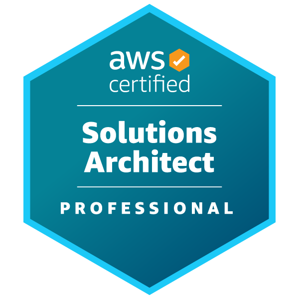
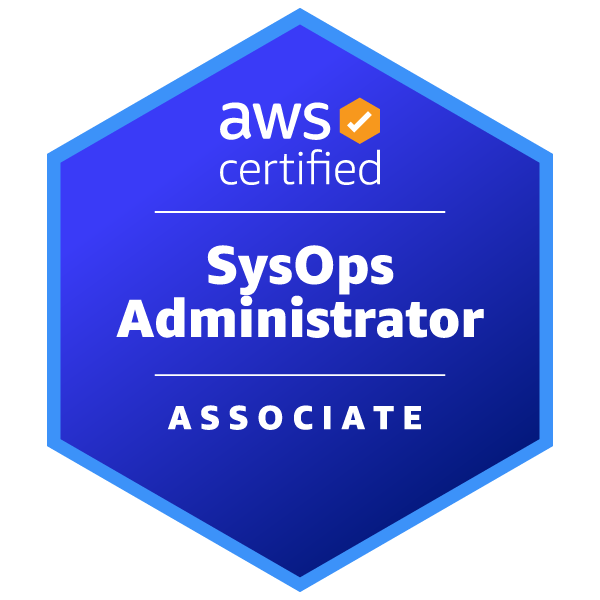
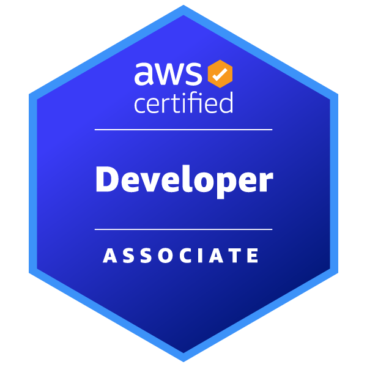
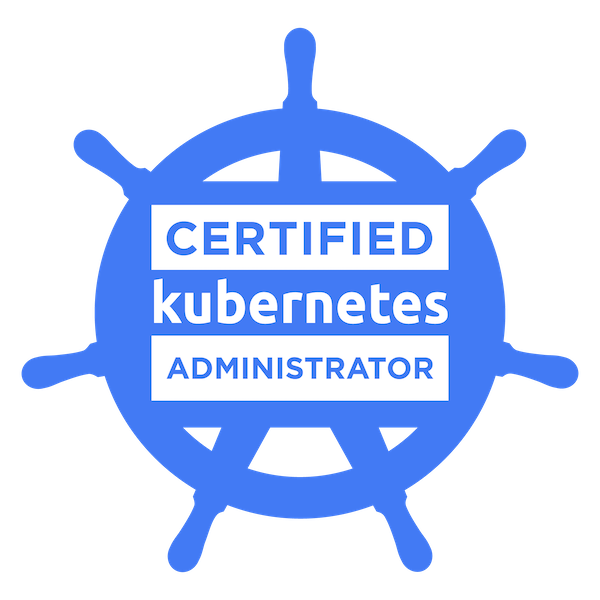

Ryan Wetzelberger
LinkedIn Profile
(410) 929-3279
ryan@cloudnetworkjourney.com
PROFESSIONAL SUMMARY
Experienced DevOps Engineer focusing in DevOps tooling, networking, and security within a hybrid environment. Driven to simplify workflows and shorten feedback loops. Coordinates efforts across multiple teams to meet business needs.
TECHNOLOGY SKILLS
- Amazon Web Services (AWS)
- Kubernetes / Argo CD
- Python / Ruby / Bash
- Terraform / Chef / Ansible
- Amazon Linux / CentOS / Ubuntu / OS X
- Nagios / ELK / Grafana
- Device42
- Git / Jira / Bitbucket / Confluence
- Juniper JunOS / Palo Alto Networks PANOS / Arista EOS
PROFESSIONAL EXPERIENCE
Amobee, Inc. via acquisition of VideologyBaltimore, MD
Lead DevOps EngineerApr 2022- Sept 2022
Senior DevOps Network EngineerAug 2018 - Mar 2022
- Leads a team of 6 DevOps Engineers prioritizing project and work requests from business and development teams.
- Plans application migrations to Kubernetes, deploying apps in pipelines using Argo CD.
- Drives consolidation efforts of Continuous Integration (CI) management of applications, and cut infrastructure costs.
- Participates in the Operations Excellence Council, influencing future direction of technical operation projects and architectures.
- Supervises and assist team members with troubleshooting various technologies.
- Mentors an intern, introducing many disciplines of operations, focusing on troubleshooting and resolving tickets assigned to the team.
- Assists IT team with corporate directory structures to simplify employee onboarding.
- Manages a global, hybrid cloud network spanning multiple co-locations, and VPC's in Google Cloud Platform and Amazon Web Services (AWS).
Technologies: AWS, Kubernetes, Python, Terraform, Grafana, Docker, Jenkins, Bamboo, GCP, Palo Alto Networks, Atlassian
Videology, Inc. Baltimore, MD
Senior Site Reliability EngineerNov 2017 - Aug 2018
Network AdministratorSept 2015 - Nov 2017
- Expertly leveraged multiple configuration management tools, like Chef, Ansible, and Terraform.
- Utilized programming languages such as Python, Ruby, and Bash to integrate with various API's for infrastructure management.
- Designed and delivered Terraform automation framework to DevOps team.
- Managed an ELK implementation across many instances and AWS regions, centralizing system event logs.
- Managed a global, secure network spanning AWS and corporate sites.
- Automated user access provisioning against AWS IAM, JumpCloud, and Microsoft Active Directory.
- Provided effective one-on-one training as well as group presentations on various technologies to fellow employees.
Technologies: AWS, Terraform, Chef, Ruby, Python, Bash, Ansible, Atlassian, Palo Alto Networks, Nagios, ELK, Grafana, Juniper, Aruba, JumpCloud, Microsoft Active Directory, FortyCloud
Textron Systems (AAI Corp)Hunt Valley, MD
Systems Network Engineer IIOct 2011 - Sept 2015
- Supervised a team of engineers in developing and maintaining network architectures for various Unmanned Aircraft Systems (UAS) solutions.
- Managed the configuration and design of networking components including; VoIP equipment, firewalls, and layer 2/3 switches.
- Defined network team process and roles within Textron Systems.
- Implemented dynamic routing protocols like OSPF and PIM-SM to meet requirements of system design.
- Skillfully created proposals for the infrastructure team, compiling Bill of Estimates (BOE) for efforts while efficiently tracking progress throughout project life using Earned Value (EVMS).
- Derived and allocated technical requirements from Statement of Works (SOW's) and Voice of the Customer needs.
- Designed and configured Spanning Tree Protocol to provide stability to switching network.
- Aided in the DIACAP accreditation process through scans and documentation of systems (including, but not limited to, providing technical guidance to DIACAP reviews related to network components).
- Regularly interfaced with customers to convey technical program status, risks, and program plans.
Technologies: Cisco, Juniper, Broadcom, Atlassian
King's CollegeWilkes Barre, PA
Student Support Specialist Manager Aug 2007 - May 2011
CERTIFICATIONS AND TRAINING
EDUCATION
2011 King's College
B.S. Computer and Information Systems with Honors
B.A. Philosophy with Honors